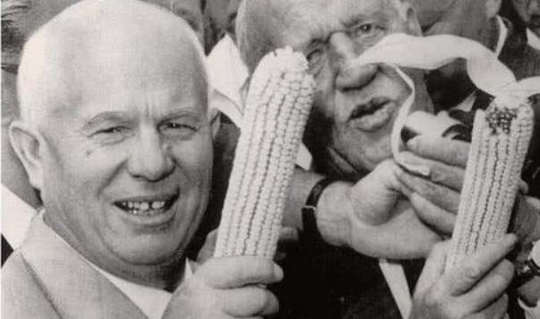

尼基塔·谢尔盖耶维奇·玉米赫鲁晓夫（1894年4月17日—1971年9月11日），苏联党和国家最♂高♂领导人（1953年—1964年），曾任苏联共产党中央委员会第一书记以及苏联部长会议主席等重要职务。
赫鲁晓夫1894年出生于俄罗斯库尔斯克州卡利诺夫卡，1918年加入布尔什维克党，1934年当选为联共（布）中央委员。1939年当选为联共（布）中央政治局委员。卫国战争期间，先后担任西南方面军、斯大林格勒方面军和第一乌克兰方面军军事委员会委员。1953年9月3日当选为苏联共产党中央委员会第一书记。之后大力排除异己，肃清政敌。1956年2月在苏共二十大上作否定斯大林的秘密报告。1958年兼任苏联部长会议主席。1964年10月被解除党内外一切职务，从此被迫淡出政坛。至1971年9月11日因心脏病于莫斯科逝世。
赫鲁晓夫担任苏联最高领导人期间，主持进行一系列改革：政治上，召开苏共二十大批判个人崇拜，此后实施去斯大林化政策，为大清洗中的受害者平反，加强社会主义民主和法制建设，在苏共二十二大上提出“全民国家”“全民党”等新观点；经济上，调整农业政策和改进农业管理体制；改革工业管理体制，使苏联的民生经济得到改善。但他的“秘密报告”震动了社会主义阵营，引发东欧骚乱。20世纪60年代，还主导了中苏交恶。在冷战中领导苏联与美国和西欧等资本主义国家对峙，曾多次访美。他还是第二次柏林危机、古巴导弹危机等事件的主要策划者
是指苏联赫鲁晓夫时期的玉米运动。玉米运动是前苏联总理赫鲁晓夫进行改革时发动的一场运动。据说赫鲁晓夫想学习美国，大面积种植玉米，不顾及苏联的地理气候因素。 赫鲁晓夫决定全苏联种植玉米。但由于苏联地理条件（主要是气温和光照）实在太差，玉米几乎不结“棒子”，加上国家机构人员腐败，从国外购进大“棒子”愚弄总理，玉米运动终究失败。
扩展资料 苏联大部分地区不具备美国“玉米带”那样得天独厚的地理条件。因此，不少地方农民播种的玉米一无所获。这不仅无法为牲畜提供充足的饲料，而且由于玉米的种植挤掉了其他作物，连人的口粮都受到威胁，而以玉米秸秆作青贮饲料，比苏联传统的青贮饲料三叶草、牧场草等成本高出两倍多。 赫鲁晓夫的政策遭到了现实的“无情打击”，“玉米热”因此冷却下来。到了20世纪60年代，玉米热成了赫鲁晓夫的笑柄，人们给他起了个外号“古古鲁沙”，即俄文“кукуруза”，意为“玉米棒子”。